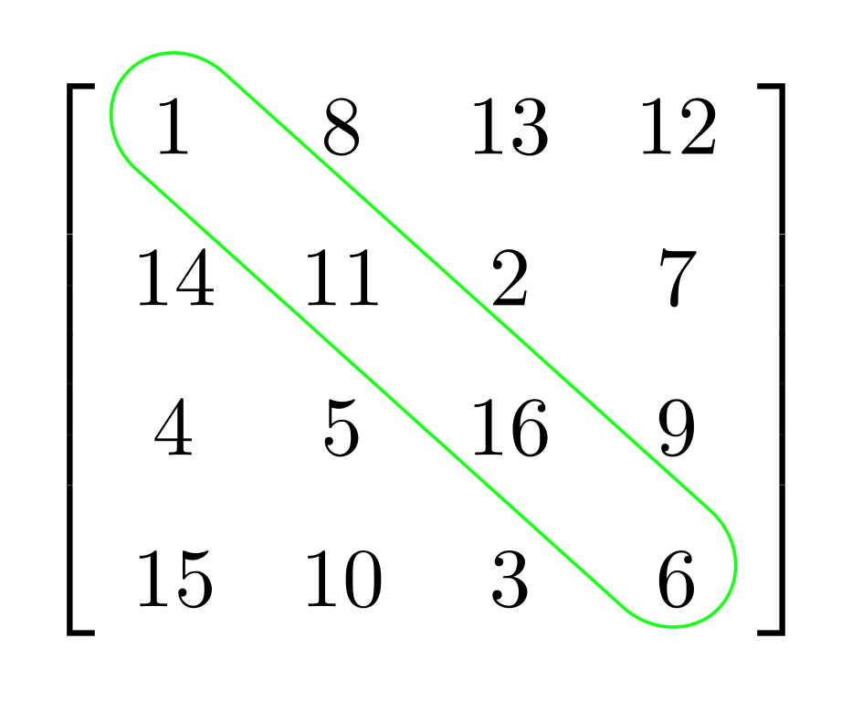

Home
A matriz é uma representação de dados, geralmente numéricos, divididos por linhas e colunas. Uma matriz é representada da forma Amxn. Assim, temos a matriz A, que possui m linhas e n colunas. A matriz M3x2, por exemplo, possui três linhas e duas colunas. A matriz contém termos representados por aij, em que i é a linha que o termo ocupa e j é a coluna que o termo ocupa.
Existem casos especiais de matriz, como a matriz linha, a matriz coluna, a matriz quadrada, a matriz oposta e a matriz identidade. Podemos realizar operações importantes com as matrizes, como adição, subtração e multiplicação. Na informática, matrizes são essenciais para o desenvolvimento da programação. A matriz é utilizada para facilitar o trabalho com dados numéricos, separando determinadas informações de tabelas por linhas e colunas.

Podemos representar genericamente os elementos de uma matriz, isto é, podemos escrever esse elemento utilizando uma representação matemática. O elemento genérico será representado por letras minúsculas (a, b, c…), e, assim como na representação de matrizes, ele também possui índice que indica sua localização. O primeiro número indica a linha em que o elemento está, e o segundo número indica a coluna na qual ele se localiza."
"O conjunto das matrizes possui as operações de adição e multiplicação muito bem definidas, isto é, sempre que operamos duas ou mais matrizes, o resultado da operação ainda pertence ao conjunto das matrizes. No entanto, e a operação de subtração? Essa operação entendemos como sendo a inversa da adição (matriz oposta), que também está muito bem definida.
Antes de definirmos as operações, vamos entender as ideias de elemento correspondente e igualdade de matrizes. Elementos correspondentes são aqueles que ocupam a mesma posição em diferentes matrizes, ou seja, que estão localizados na mesma linha e coluna. Obviamente as matrizes precisam ser de mesma ordem para que existam elementos correspondentes. "
Aqui está nosso sistema de criação de matriz:
Criação de Matriz